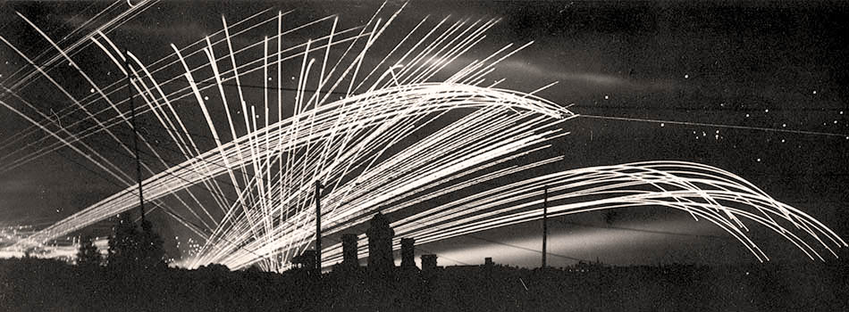
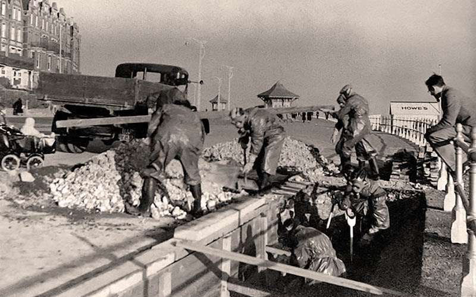

Bomb Map
There were 51 air-raids in total, dropping 328 explosive bombs and over 1,000 incendiary bombs. 81 buildings were destroyed, 217 seriously damaged and 4,324 lightly damaged. 25 deaths were recorded, including 1 soldier.[14]For almost 80 days Bexhill lay in the 'bomb alley' flight path to London, in one 24 hour period over 480 doodlebugs (V-1 flying bombs) were tracked overhead.
Click the map-icon above to see where the WW2 bombs would have landed today. Locations in orange can be interacted with for additional information.

Anti-aircraft fire over the town, July 1944.
© Bexhill Museum
These bomb locations are taken from a 1944 Bexhill Observer article[15], with context given by David Hatherell from the Local History Study Group.
Structures
Bexhill's beaches were closed off and surrounded by barbed wire, mines and concrete anti-tank cubes. Light anti-aircraft guns supported by armoured vehicles were placed around town and later, heavy anti-aircraft guns were installed along the promenade.A few anti-tank cubes (dragons's teeth), air raid shelters and pillboxes can still be found today. There are also three war memorials.

Men creating a shelter as an air-raid precaution along East Parade, 1939. © The Royal Windsor Website & Forum